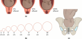

Página 5 · Posso aplicar?
O checklist APLICAR
A·P·L·I·C·A·R
Sete letras, sete caixas que precisam estar marcadas antes de encostar o instrumento na paciente.
Escolher o fórceps é a primeira pergunta. Poder aplicá-lo é a segunda — e é a que impede o acidente. O mnemônico APLICAR reúne os sete critérios de aplicabilidade. Nenhum se pula.
APLICAR, a palavra que segura a mão
APLICAR = Ausência de colo · Pelve proporcional · Livre · Insinuada · Conhecer a variedade · Amniotomia · Reto e bexiga vazios. Guardar a palavra é guardar a ordem de conferência.
Percorrendo as sete letras
- A — Ausência de colo (= dilatação total). O fórceps é instrumento do período expulsivo e nunca se aplica durante a dilatação. Se o colo ainda não apagou, a colher pega no colo e o rasga. Dilatação total é pré-condição absoluta.
- P — Pelve proporcional. O fórceps faz rotação e tração, mas não diminui diâmetro. Havendo desproporção cefalopélvica (DCP), a via é a cesárea — insistir com fórceps numa DCP é forçar o que não cabe.
- L — Livre (canal desobstruído). O canal de parto não pode ter obstrução. É raro, mas existe: um condiloma vulvar gigante obstruindo o canal contraindica.
- I — Insinuada. A cabeça precisa estar insinuada. O fórceps alto — aplicado com a cabeça não encaixada, em plano De Lee negativo — foi proibido/proscrito. Este é um dos pontos mais cobrados: fórceps alto não existe mais como conduta.
- C — Conhecer a variedade de posição — para saber quanto a cabeça roda e como encaixar a colher na pegada ideal (o fio que vem da página anterior).
- A — Amniotomia. Rompe-se a bolsa para aplicar o fórceps. Atenção: não é amniotomia de rotina para toda parturiente — é dirigida ao procedimento.
- R — Reto e bexiga vazios. A bexiga vazia é obrigatória (sonda de alívio, para reduzir traumatismo da parede anterior e o risco de fístula). O reto, hoje, não precisa mais ser esvaziado — antigamente sim. A pegadinha vive aqui: bexiga SIM, reto NÃO.
Dilatação total — o fórceps é do período expulsivo.
Nunca na dilatação: a colher pega no colo e rasga.O fórceps não diminui diâmetro (só roda e traciona).
DCP → cesárea. Insistir é forçar o que não cabe.O canal não pode ter obstrução.
Raro, mas existe: condiloma vulvar gigante contraindica.A cabeça precisa estar insinuada (plano 0 ou abaixo).
Fórceps alto (De Lee negativo) está PROIBIDO.Define o grau de rotação e como encaixar a colher.
Sem a variedade, não se sabe posicionar a pega.Rompe-se a bolsa para aplicar o fórceps.
Dirigida ao procedimento ≠ amniotomia de rotina.Bexiga vazia é obrigatória (sonda de alívio; evita fístula).
Bexiga SIM; reto NÃO (antigamente sim).
Interativo: deslize a cabeça pela escala de estação.
Deslize a cabeça: insinuada (De Lee 0 a +3, verde) = pode aplicar (critério I); plano De Lee negativo (vermelho) = fórceps alto, PROIBIDO. Um hotspot mostra o erro do colo — aplicar na dilatação (colo não apagado): a colher pega no colo e vem rasgando (critério A). A insinuação começa no plano 0, não em +3.
A descida da cabeça em relação às espinhas isquiáticas: no plano 0 a apresentação atinge o nível das espinhas — está insinuada; acima é estação negativa (fórceps alto, zona proibida), abaixo é positiva. Ancora o critério I. A escala numérica completa (−5 a +5) você percorre no esquema interativo acima.
Rice University / OpenStax — figura 10.6, CC BY 4.0 (via Open RN, NBK615337) · página de origem
O que o APLICAR não diz
O mnemônico cobre bem A/P/L/I/C/A/R, mas a diretriz acrescenta pré-requisitos que ele não verbaliza — e que caem. Abra o bloco abaixo quando quiser o nível de especialista.
O que o mnemônico não diz — pré-requisitos além do APLICAR
- Anestesia satisfatória, estimativa do peso fetal e consentimento informado são exigências adicionais ao ato.
- Cortes de peso fetal: parto operatório > 4000 g deve ser criterioso; em pelve média (De Lee 0/+1), > 4000 g já pesa a favor da cesárea; período pélvico prolongado com > 4500 g → cesárea (profilaxia de distocia de ombro). No outro extremo, < 2000 g o fórceps é o mais seguro (utilizável até ~1000 g) — o que reaparece na página do vácuo.
- Regra das 3 trações (critério de falha): aplicado corretamente, o fórceps é interrompido se não há progressão após 3 trações com pega correta. Instrumentar não é insistir.
- Sobre o "R": a exigência confirmada é a de esvaziamento vesical; o reto não precisa ser esvaziado — o item é confirmado por omissão na diretriz.
Quiz — fixação
Sobre o critério "I" do APLICAR (Insinuada), assinale a correta:
- B) Correta. A cabeça insinuada é condição inegociável; o fórceps alto (De Lee negativo) está proibido — nem experiência o ressuscita.
- A) Pegadinha de "exceção para experientes". Não há: a proscrição é categórica.
- C) Erra a definição. A insinuação começa no plano 0; De Lee −3 é justamente a cabeça não insinuada (zona proibida).
- D) Confunde os critérios A e I. Dilatação total (A) é necessária mas não suficiente — sem insinuação (I) não se aplica.
Quanto ao critério "R" (reto e bexiga) e ao "A" (amniotomia):
- B) Correta. Bexiga vazia = obrigatória (sonda de alívio, reduz trauma de parede anterior e risco de fístula); reto NÃO precisa mais; amniotomia dirigida ao fórceps, não de rotina.
- A) Carrega dois erros clássicos. Mantém o esvaziamento retal (desatualizado) e trata a amniotomia como rotineira.
- C) Dispensa a bexiga. Perde a proteção contra fístula.
- D) Inverte tudo. Esvazia o reto (que não precisa) e deixa a bexiga cheia (que é justamente o obrigatório).
Cabeça insinuada, dilatação total, porém há desproporção cefalopélvica evidente. Conduta:
- C) Correta. O "P" do APLICAR: fórceps não diminui diâmetro — diante de DCP, a via é a cesárea.
- A) Atribui ao fórceps um poder que ele não tem. Tração não faz caber o que não cabe.
- B) Inventa mecanismo inexistente. Nem vácuo nem fórceps reduzem o diâmetro; o vácuo é para desprendimento sem rotação.
- D) Confunde rotação com desproporção. Scanzoni é técnica de rotação (>45° com Simpson), não resolve DCP.
Existe um instrumento que troca o preço materno pelo fetal, é mais fácil de manejar — e tem um limite de idade gestacional que o fórceps não tem.